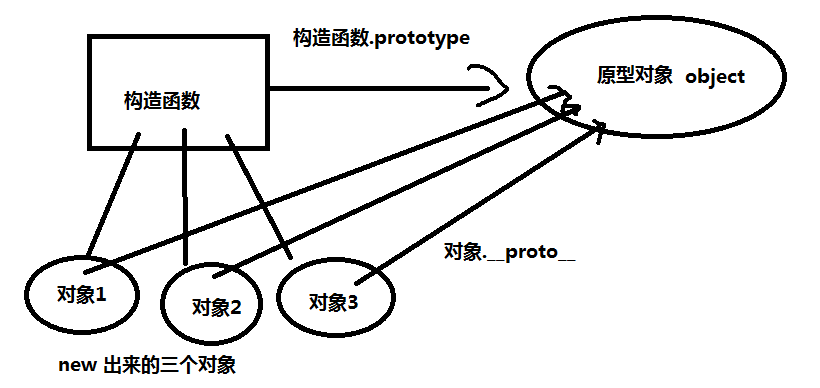

梳理知识点
字面量 ：
缺点 ： 一次创建一个对象
工厂模式
优点 ： 解决了多个同类对象创建时代码重复
缺点 ： 函数调用 不能确定对象属于哪一个类 （对象和类的关系）
构造函数
优点 ： 确定对象属于哪一个类 对象创建规范 new
缺点 ： 方法被重建
原型创建：
优点 ：解决了多个同类对象创建时 方法重建问题
缺点 ： 属性相同
混合
1、原型链
所有的构造函数都有一个prototype属性，这个属性也叫 原型对象 构造函数.prototype
所有的构造函数new出来的对象也都有一个原型对象 实现 ：对象.__proto__

原型链 ： 实例对象和原型之间的链接 叫做原型链 表示方法: __proto__ 【注】：obj.__proto__访问的是和构造函数.ptototype同一个原型链

function Dog(){
}
Dog.prototype.study = function(){
return "学习";
}
var dog = new Dog();
dog.__proto__.like = function(){
return "打球";
}
console.log(Dog.prototype);//{study: ƒ, like: ƒ, constructor: ƒ}
console.log(dog.__proto__);//{study: ƒ, like: ƒ, constructor: ƒ}
//通过new构造函数创建的实例虽然没有 prototype 属性，但是可以通过 __proto__ 查找并操作到对应的原型对象
var dog2 = new Dog();
console.log(dog2.like())//打球
2、原型对象的执行流程
首先去实例上查找，如果找到了就返回
如果没做查找到，就去改构造函数的原型上查找，如果找到了就返回，如果没找到，就去Object.prototype的原型上查找，找到了就返回，否则返回undefined
Object.prototype是最大的原型对象
3、原型中的关键字
测试某个对象是否属于某个类的方法 isPrototypeOf()
语法： 构造函数.prototype.isPrototypeOf(对象):判断一个对象是否指向了该构造函数的原型对象，可以使用isPrototypeOf()方法来测试 结果为boolean类型 同 instanceof
delete ：删除实例属性
语法 ： delete 对象.实例属性
function Cat(){
this.name = "小花";
delete this.name;//可以在构造函数中删除,删除构造函数的实例属性
}
var cat = new Cat();
//delete cat.name;//也可以在构造函数外，不过删除必须在创建实例后
console.log(cat.name)//小花 --- 删除前 undefined --- 删除后
var cat2 = new Cat();
console.log(cat2.name)//小花 --- 在构造函数外删除只删除了自己实例的属性，不影响其他通过函数创建的实例
hasOwnProperty() 是否包含该实例属性,包含返回true，否则返回false own：拥有，特有的 proper：适当的，本身的，特有的
语法： 实例对象.hasOwnProperty("实例属性")
console.log(cat.hasOwnProperty("name"));//有就是true 没有就是false
in 是否存在该属性（原型或实例中）
语法： "属性" in 对象实例
console.log( dog.hasOwnProperty("like") );//false
console.log("like" in dog)//true
4、面向对象的三个特性
封装 ： 屏蔽内部细节 用户直接调用被封装的功能
继承 ： 子类拥有父类的所有属性或方法
多态 （js中不存在多态概念） 【注】：但可以通过代码模拟多态
5、继承方式一 ： 通过改变父类的执行环境
function Father(){
}
function Son(){
在子类中定义一个实例属性 值指向父类
this.parent = Father;
在子类中 执行父类功能
this.parent();
}
function Father(age){
this.age = age;
this.money=999999;
this.drink = function(){
return "喝酒";
}
}
function Son(age){
this.parent = Father;
this.parent(age);
delete this.parent;//继承过后this.parent就没有用了，可以删除，节省内存
}
var father = new Father(100);
var son = new Son(44);
6、继承方式二--通过call继承
父类构造函数.call( this , 参数 ) 通过call方式在子类中调用父类构造函数 ，让父类中的this指向了子类对象
call方法第一个参数 ： 改变父类中的this指向
第二个参数 ： 继承的属性 个数不固定
7、继承方式三--通过apply继承
继承原理同call
apply与call的区别 ：
apply的第二个参数要求是一个数组 可以使用arguments代替
call的第二个参数个数不固定
function Father(name,age){
this.name = name;
this.age = age;
this.money = 999999999;
this.like = function(){
return "打球";
}
}
Father.prototype.drink = function(){
return "牛奶";
}
function Son(name,age){
//Father.call(this,name,age);//通过call改变Father中this的指向，达到继承的效果，第一个参数是指向地址，第二个参数是传参
//Father.apply(this,[name,age]);//用法和call基本类似，不过apply中的第二个参数是个数组，解决了当需要多个参数的时候继承的时候也要写多个参数的问题，因为这个参数数组可以写arguments
Father.apply(this,arguments);
}
通过call,和apply的继承方式只能继承实例属性,原型属性继承不到
8、继承方式四 -- 原型继承
原理 ： 让子类的原型对象指向父类的实例化对象
子类.prototype = new 父类();
注意：对于父类中实例属性值不固定的属性，通过原型的方式继承时，属性值无法更改
function Father(age){
this.age = age;
this.money = 999999999;
this.skill = function(){
return "撩妹十级";
}
}
Father.prototype.drink = function(){
return "牛奶";
}
function Son(){
}
Son.prototype = new Father(100);
var son = new Son();//通过这种继承方式父亲的全部属性都已经继承，但是无法修改对应属性，因为儿子的构造函数中没有任何属性，通过修改儿子构造函数的原型对象的指向，将其指向改为父亲的实例，则，该函数的第一级的原型对象是父亲的实例，然后根据原型链，得到了父亲的全部属性
9、继承方式五--混合继承
通过call 或 apply方式 继承实例属性和实例方法
通过 原型继承继承 原型属性或 原型方法
function Father( name,age,adr ){
this.name = name;
this.adr = adr;
this.age = age;
this.money = 99999;
this.like = function(){
return "milk";
}
}
Father.prototype.skill = function(){
return "撩妹十级";
}
function Son(name,adr,age){
Father.apply(this,arguments)
}
Son.prototype = new Father();
var son = new Son('xm','elw',20);
通过apply继承父亲的实例属性，然后通过prototype继承父亲的原型属性，因为原型链，先找内部的，即自身的实例属性，然后一级一级的原型向上找
10、es6构造函数
通过constructor 构造属性
通过 super 实现继承
11、单例模式
单例模式 ： 永远保持对象的一个实例
字面量创建对象的方式 ： obj = { } 【注】：将程序存在json对象中，然后把json对象赋给变量，再通过new这个函数创建实例，则实例指向这个json对象，json对象中的this指向这个实例
单例模式实现思路 ：
在构造函数内部实现：
将第一次new出来的对象存入到一个变量中，并返回该变量
第二次new对象时，判断上面的变量中是否含有值，如果有 就直接返回
function Student(){
}
单例模式的两种实现方式：
function Teacher(){
//判断如果Teacher.instance 不存在，就创建一个对象 ,将对象存到该变量上
if( !Teacher.instance ){
Teacher.instance = {
name : "jack"
}
}
return Teacher.instance;
}
或
function Teacher(){
//判断如果Teacher.instance 不存在，就创建一个对象 ,将对象存到该变量上
if(Teacher.instance){
return Teacher.instence;
}
Teacher.instance = { "name" : "jack" }
return Teacher.instance
}
好处 ； 可以实现变量共享
单例模式的过程
var ins;
function Fly(){
if( ins ){
return ins;
}
return ins = this;
}
var fly = new Fly();
var fly2 = new Fly();
console.log(fly)//Fly {}
console.log(fly2)//Fly {}
console.log(fly == fly2)//true
实现了多次多次定义，只用一个函数，然后调用该函数的属性都指向一个函数，实现了全局共享，想要使用的时候只需要再new一下调用属性就可以
【注】：面向对象一般不适用全局属性来实现全局共享，因此出现了
function Fly(){//instance:实例，情况
if( !Fly.instance ){
return Fly.instance = {//返回的是json对象，然后把json对象赋值给另一个变量，因为对象的赋值其实是地址的传递，所以返回的变量需要时json对象，然后新对象存放的地址指向该对象，因为变量有是通过new出的实例，所以函数中的this 都指向 该实例
sky:"blue",
clound:function(){
return "white";
},
out:function(){
console.log(this)//构造函数中的this都指向通过new出来的实例 this一般指向时间的调用者，只有遇到了事件和定时器会改变this的指向，需要注意
}
}
}
return Fly.instance;
}
var fly1 = new Fly();
console.log(fly1)//{sky: "blue", clound: ƒ, out: ƒ}
console.log(fly1.clound())//white
fly1.out();//{sky: "blue", clound: ƒ, out: ƒ}
辅助理解：
function Bird(index,num){
this.index = index;//
Bird.num = num;
}
var dog = new Bird(10,5);
console.log(dog)//Bird {index: 10}
console.log(Bird.num)//5
console.log(dog.index)//10
console.log(dog.num)//undefined
console.log(new Bird().num)//undefined